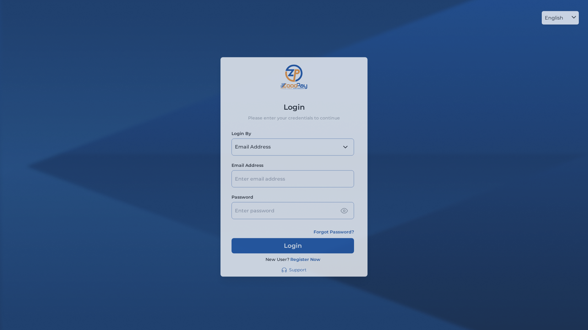

Affected elements (sample):
<input type="text" id="myInput" data-testid="language-dropdown" readonly value="English"> <input type="checkbox" checked> (×4 instances) + 6 additional unlabelled inputs
Affected element:
<ul class="overflow-y-scroll overflow-x-hidden scrollBar scroll-auto h-scrollbarheight">
Affected elements (sample):
<li class="previous disabled"> <li class="text-sm font-[400]..."><a rel="..." role="button">...</a></li> <li class="break"><a role="button" tabindex="0" aria-label="Jump forward">...</a></li> + 3 additional pagination <li> items outside a list container
| Check | Criterion | Status | Detail |
|---|---|---|---|
| Keyboard traversal | 2.1.1 | ✓ Pass | 37 focusable elements; 2 removed from tab order (intentional). Navigation links, buttons and inputs all reachable. |
| Focus visibility | 2.4.7 | ⚠ Review | 12 outline:none rules found (all from vendor Swagger-UI CSS — not app code). No :focus-visible detected in stylesheets. Recommend auditing app-level focus styles to confirm indicators are visible. |
| Skip link | 2.4.1 | ✗ Fail | No skip navigation link present. Keyboard users must tab through the full sidebar navigation on every page load. |
| Heading hierarchy | 1.3.1 | ✓ Pass | 1 heading total — <h1> "List of Distributors". No level skips. Correct structure. |
| Image alt text | 1.1.1 | ⚠ Review | 45 images — all have alt attributes (0 missing, 0 empty). 1 inline SVG missing aria-label and <title> element. |
aria-label or associate a visible <label> to all 11 unlabelled form inputs. At minimum, the language dropdown input and all checkbox inputs must have accessible names. This blocks screen reader users from understanding form controls.<li> elements inside a proper <ul> container, and ensure the <ul> in the sidebar only contains direct <li> children. This ensures screen readers announce list semantics correctly.aria-label or a <title> child to the inline SVG element so screen readers can describe it meaningfully.:focus-visible to provide visible focus rings for keyboard users while keeping the UI clean for mouse users.